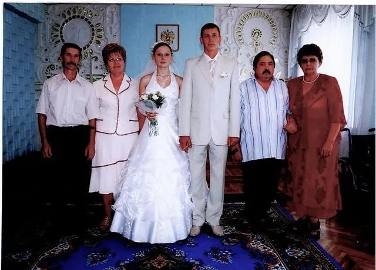

Родился: 01.10.1954, Россия
Умер: 30.03.2011 (болезнь)
Продолжительность жизни: 56
Отец: Иван Михайлович Пасюк (1910 - 1982)
Мать: Клавдия Григорьевна (Бородина)
Брат: Владимир Иванович Пасюк (? - 28.02.2000)
Единоутробный брат: Александр Дмитриевич Полугородников (1941 - 1999)
Жена: Раиса Павловна Пасюк (Шемет) (10.02.1949 - 24.12.2021)
Дочь: Анна Викторовна Жилинкова (Пасюк) (31.10.1980)
Дочь: Елена Викторовна Васина (Пасюк) (14.05.1985)
Сын: Виталий Викторович Пасюк
Свадьба: 30.06.2007, Крыловская. Свадьба Дмитрия Владимировича Васина и Елены Викторовны Пасюк(после- Васиной). |